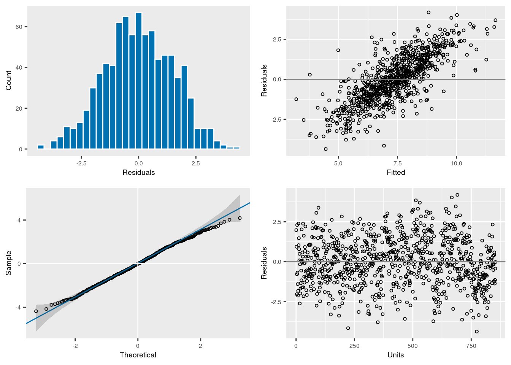
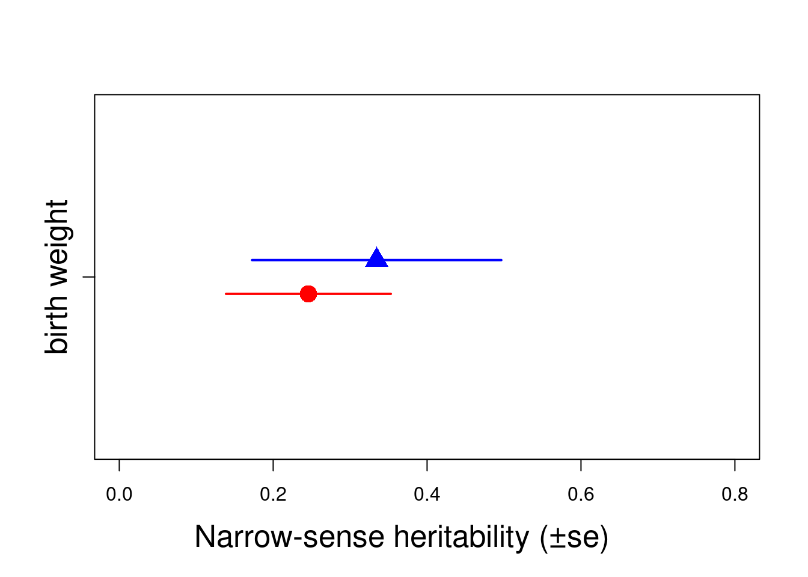

library(asreml)2 Asreml-R
2.0.1 Running the model
First we need to load the asreml library:
To be able to fit an animal model, Asreml-r needs (the inverse of) the relationship matrix using the ainverse function:
ainv <- ainverse(gryphonped)We are now ready to specify our first model:
model1 <- asreml(
fixed = bwt ~ 1, random = ~ vm(animal, ainv),
residual = ~ idv(units),
data = gryphon,
na.action = na.method(x = "omit", y = "omit")
)ASReml Version 4.2 25/03/2024 14:12:38
LogLik Sigma2 DF wall
1 -4128.454 1.0 853 14:12:38
2 -3284.272 1.0 853 14:12:38
3 -2354.992 1.0 853 14:12:39
4 -1710.357 1.0 853 14:12:39
5 -1363.555 1.0 853 14:12:39
6 -1263.516 1.0 853 14:12:39
7 -1247.854 1.0 853 14:12:39
8 -1247.185 1.0 853 14:12:39
9 -1247.183 1.0 853 14:12:39In this model, bwt is the response variable and the only fixed effect is the intercept, denoted as 1. The only random effect we have fitted is animal, which will provide an estimate of \(V_A\). Our random animal effect is connected to the inverse related matrix ainv which integrate the relativeness or pedigree information.data= specifies the name of the dataframe that contains our variables. Finally, we inform asreml() what to when it encounters NAs in either the dependent or predictor variables (in this case we choose to remove the records). If you use the argument “include” instead of “omit”, model will keep the NA. With x=“include”, the model will exchange NA with 0. Be careful you need to standardize your trait so the mean will be equal to 0, if not estimates (including covariance in multivariate models) could be strongly biased due to the the missing values considered as 0. y=“include” will exchange NA with a factor labeled mv which will be included in the sparse equation. For more details see Asreml-R manual.
A note of the specification of the structure of the residuals: This simple univariate model will run fine without residual=~idv(units). However, if you are going to use vpredict() to calculate the heritability (see below), without specifying the residuals in this way will result in a standard error for the heritability that is incorrect.
Any model has assumption which need to be checked. The model can be plot which help visualizing the distribution of the model residual and check the different assumptions.
plot(model1)
To see the estimates for the variance components, we run:
summary(model1)$varcomp component std.error z.ratio bound %ch
vm(animal, ainv) 3.395398 0.6349915 5.347154 P 0
units!units 3.828602 0.5185919 7.382687 P 0
units!R 1.000000 NA NA F 0We fitted a single random effect so we partitioned the phenotypic variance into two components. The vm(animal, ainv) variance component is \(V_A\) and is estimated as 3.4. Given that the ratio of \(V_A\) to its standard error (z.ratio) is considerably larger than 2 (i.e. the parameter estimate is more than 2 SEs from zero), this looks likely to be significant. The units!units component refers to the residual variance \(V_R\), and units$R should be ignored. If you don’t include residual=~idv(units)in your model specification, units$R will provide you with the residual variance.
2.0.2 Estimating heritability
We can calculate the \(h^2\) of birth weight from the components above since \(h^2 = V_A/V_P = V_A/(V_A+V_R)\). Thus according to this model, \(h^2\) = 3.4 / (3.4 + 3.83) = 0.47.
Alternatively we can use the vpredict() function to calculate \(h^2\) and its standard error. vpredict()function has two structures, first the model used (here model1) and then the estimate name with its associated equation. The equation used different V and their associated numbers depend of the order of the different random and residual effects included in the model.
vpredict(model1, h2.bwt ~ V1 / (V1 + V2)) Estimate SE
h2.bwt 0.4700163 0.076508812.0.3 Adding fixed effects
To add fixed effects to a univariate model, we simply modify the model statement. For example, we might know (or suspect) that birth weight is a sexually dimorphic trait and therefore fit in the model.
model2 <- asreml(
fixed = bwt ~ 1 + sex,
random = ~ vm(animal, ainv),
residual = ~ idv(units),
data = gryphon,
na.action = na.method(x = "omit", y = "omit")
)ASReml Version 4.2 25/03/2024 14:12:40
LogLik Sigma2 DF wall
1 -3364.126 1.0 852 14:12:40
2 -2702.117 1.0 852 14:12:40
3 -1978.916 1.0 852 14:12:40
4 -1487.834 1.0 852 14:12:40
5 -1236.350 1.0 852 14:12:40
6 -1172.771 1.0 852 14:12:40
7 -1165.270 1.0 852 14:12:40
8 -1165.093 1.0 852 14:12:40
9 -1165.093 1.0 852 14:12:40Now we can look at the fixed effects parameters and assess their significance with a conditional Wald F-test:
summary(model2, coef = TRUE)$coef.fixed solution std error z.ratio
(Intercept) 6.058669 0.1718244 35.26082
sex_1 0.000000 NA NA
sex_2 2.206996 0.1619974 13.62365wald.asreml(model2, ssType = "conditional", denDF = "numeric")ASReml Version 4.2 25/03/2024 14:32:37
LogLik Sigma2 DF wall
1 -1165.093 1.0 852 14:32:37
2 -1165.093 1.0 852 14:32:37$Wald
[0;34m
Wald tests for fixed effects.[0m
[0;34mResponse: bwt[0m
Df denDF F.inc F.con Margin Pr
(Intercept) 1 251 3491.0 3491.0 0
sex 1 831 185.6 185.6 A 0
$stratumVariances
df Variance vm(animal, ainv) units!units
vm(animal, ainv) 752.28476 5.957254 0.9864077 1
units!units 99.71524 2.938413 0.0000000 1The very small probability (Pr) in the Wald test above shows that sex is a highly significant fixed effect, and from the parameter estimates (summary(model2,coef=T)$coef.fixed) we can see that the average male (sex 2) is 2.2 kg (\(\pm\) 0.16 SE) heavier than the average female (sex 1). However, when we look at the variance components in the model including sex as a fixed effect, we see that they have changed slightly from the previous model:
summary(model2)$varcomp component std.error z.ratio bound %ch
vm(animal, ainv) 3.060441 0.5243571 5.836558 P 0
units!units 2.938412 0.4161473 7.060991 P 0
units!R 1.000000 NA NA F 0In fact since sex effects were previously contributing to the residual variance of the model, our estimate of \(V_R\) (denoted units!R in the output) is now slightly lower than before. This has an important consequence for estimating heritability since if we calculate \(V_P\) as \(V_A\)+\(V_R\) then as we include fixed effects we will soak up more residual variance driving \(V_P\). Assuming that \(V_A\) is more or less unaffected by the fixed effects fitted then as \(V_P\) goes down we expect our estimate of \(h^2\) will go up:
(h2.1 <- vpredict(model1, h2.bwt ~ V1 / (V1 + V2))) Estimate SE
h2.bwt 0.4700163 0.07650881(h2.2 <- vpredict(model2, h2.bwt ~ V1 / (V1 + V2))) Estimate SE
h2.bwt 0.510171 0.07432388Here \(h^2\) has increased slightly from 0.47 to 0.51. Which is the better estimate? It depends on what your question is. The first is an estimate of the proportion of variance in birth weight explained by additive effects, the latter is an estimate of the proportion of variance in birth weight after conditioning on sex that is explained by additive effects.
An important piece of advice, each researcher should be consistent in how they name their estimates and always correctly describe which estimates they are using conditional or not (to avoid any confusion).
2.0.4 Adding random effects
This is done by simply modifying the model statement in the same way. For instance fitting:
model3 <- asreml(
fixed = bwt ~ 1 + sex,
random = ~ vm(animal, ainv) + byear,
residual = ~ idv(units),
data = gryphon,
na.action = na.method(x = "omit", y = "omit")
)ASReml Version 4.2 25/03/2024 14:32:37
LogLik Sigma2 DF wall
1 -2742.658 1.0 852 14:32:38
2 -2237.268 1.0 852 14:32:38
3 -1690.453 1.0 852 14:32:38
4 -1328.910 1.0 852 14:32:38
5 -1154.597 1.0 852 14:32:38
6 -1116.992 1.0 852 14:32:38
7 -1113.809 1.0 852 14:32:38
8 -1113.772 1.0 852 14:32:38
9 -1113.772 1.0 852 14:32:38summary(model3)$varcomp component std.error z.ratio bound %ch
byear 0.8862604 0.2695918 3.287416 P 0
vm(animal, ainv) 2.7068665 0.4422140 6.121169 P 0
units!units 2.3092415 0.3451025 6.691466 P 0
units!R 1.0000000 NA NA F 0(h2.3 <- vpredict(model3, h2.bwt ~ V2 / (V1 + V2 + V3))) Estimate SE
h2.bwt 0.4586068 0.06740364Here the variance in bwt explained by byear is 0.89 and, based on the z.ratio, appears to be significant (>2). Thus we would conclude that year-to-year variation (e.g., in weather, resource abundance) contributes to \(V_P\). Note that although \(V_A\) has changed somewhat, as most of what is now partitioned as a birth year effect was previously partitioned as \(V_R\). Thus what we have really done here is to partition environmental effects into those arising from year-to-year differences versus everything else, and we do not really expect much change in \(h^2\) (since now \(h^2 = V_A/ (V_A+V_{BY}+V_R)\)).
However, we get a somewhat different result if we also add a random effect of mother to test for maternal effects:
model4 <- asreml(
fixed = bwt ~ 1 + sex,
random = ~ vm(animal, ainv) + byear + mother,
residual = ~ idv(units),
data = gryphon,
na.action = na.method(x = "omit", y = "omit")
)ASReml Version 4.2 25/03/2024 14:32:38
LogLik Sigma2 DF wall
1 -2033.178 1.0 852 14:32:38
2 -1723.734 1.0 852 14:32:38
3 -1396.354 1.0 852 14:32:38
4 -1193.012 1.0 852 14:32:38
5 -1107.946 1.0 852 14:32:38
6 -1095.327 1.0 852 14:32:38
7 -1094.816 1.0 852 14:32:38
8 -1094.815 1.0 852 14:32:38summary(model4)$varcomp component std.error z.ratio bound %ch
byear 0.8820313 0.2632455 3.350604 P 0
mother 1.1184698 0.2386239 4.687167 P 0
vm(animal, ainv) 2.2985320 0.4962496 4.631806 P 0
units!units 1.6290034 0.3714154 4.385934 P 0
units!R 1.0000000 NA NA F 0(h2.4 <- vpredict(model4, h2.bwt ~ V1 / (V1 + V2 + V3 + V4))) Estimate SE
h2.bwt 0.1487898 0.03861552Here partitioning of significant maternal variance has resulted in a further decrease in \(V_R\) but also a decrease in \(V_A\). The latter is because maternal effects of the sort we simulated (fixed differences between mothers) will have the consequence of increasing similarity among maternal siblings. Consequently they can look very much like additive genetic effects and if present, but unmodelled, represent a type of “common environment effect” that can - and will - cause upward bias in \(V_A\) and so \(h^2\). The “common environment” can be conceived as the inextricable sum of the maternal additive genetic effect (such as maternal loci) and the maternal environment or permanent environment (such as litter or nest environment created or modified by the mother).
2.0.5 Testing significance of random effects
An important point to note in this tutorial is that while the z.ratio (component/std.error) reported is a good indicator of likely statistical significance (>1.96?), the standard errors are approximate and are not recommended for formal hypothesis testing. A better approach is to use likelihood-ratio tests (LRT).
For example, to test the significance of maternal effects we could compare models with and without the inclusion of maternal identity as a random effect and compare the final log-likelihoods of these models.
model4$loglik[1] -1094.815shows that the model including maternal identity has a log-likelihood of -1094.815, and
model3$loglik[1] -1113.772shows that the model excluding maternal identity has a log-likelihood of -1113.772.
A test statistic equal to twice the absolute difference in these log-likelihoods is assumed to be distributed as Chi square with one degree of freedom (one term of difference between the two models). In this case we would conclude that the maternal effects are highly significant since: 2 \(\times\) (-1094.8145793 - -1113.7719147) equals 37.9146708, and the p-value that comes with this is:
1 - pchisq(2 * (model4$loglik - model3$loglik), 1)[1] 7.390738e-10As P < 0.0001 we would therefore conclude that the additional of maternal identity as a random effect significantly improves the fit of the model, given an increase in log-likelihood of approximately 19.
2.0.6 Further partitioning the variance
A population can be further fragmented into different groups or categories (such as females and males, juveniles and adults or treated and untreated). Some scientific questions require further and deeper analysis of the variance. To avoid multiple model (one for each group), we can directly partition the variance between groups in a unique model. In addition, by doing so, we can also test if the variance are different between groups.
As example, we decide to take the model4 and partition its additive genetic variance and residual variance by sex. It is possible to further partition the other random effects but it will complexity the animal model and requires sufficient sample size.
First, it required to order the dataset by group (here sex).
gryphon <- gryphon[order(gryphon$sex), ]To partition variances between sex, two distinct functions are require at() for the random level, and dsum() for the residual level:
model_SEX <- asreml(
fixed = bwt ~ 1 + sex,
random = ~ at(sex):vm(animal, ainv) + byear + mother,
residual = ~ dsum(~ units | sex),
data = gryphon,
na.action = na.method(x = "omit", y = "omit")
)ASReml Version 4.2 25/03/2024 14:32:38
LogLik Sigma2 DF wall
1 -1142.164 1.0 852 14:32:38
2 -1126.308 1.0 852 14:32:38
3 -1111.536 1.0 852 14:32:38
4 -1105.383 1.0 852 14:32:38
5 -1104.375 1.0 852 14:32:38
6 -1104.364 1.0 852 14:32:38summary(model_SEX)$varcomp component std.error z.ratio bound %ch
byear 0.9001595 0.2690012 3.346303 P 0.0
mother 1.3396184 0.2663118 5.030263 P 0.0
at(sex, '1'):vm(animal, ainv) 1.4372390 0.6514306 2.206281 P 0.1
at(sex, '2'):vm(animal, ainv) 1.9861434 0.9974302 1.991261 P 0.3
sex_1!R 2.1706213 0.5542492 3.916327 P 0.0
sex_2!R 1.7112948 0.8246188 2.075256 P 0.3By partitioning the additive genetic variance and the residual variance, the model estimates the \(V_A\) and \(V_R\) for each group (sex). Doing so, we can calculate the \(h^2\) for each group of sex. Here, it’s important to know in which order the variances are estimated to extract the correct variance in the heritability equation.
(h2.F <- vpredict(model_SEX, h2.bwt ~ V3 / (V1 + V2 + V3 + V5))) Estimate SE
h2.bwt 0.2457811 0.1070794(h2.M <- vpredict(model_SEX, h2.bwt ~ V4 / (V1 + V2 + V4 + V6))) Estimate SE
h2.bwt 0.3345244 0.1619218To test if the variances are different between sexes, we can compare the model partitioned model_SEX and the previous model without the partitioning model4 in a likelihood ratio test (LRT) with 2 degrees of freedom since models have two components of variance of difference.
model_SEX$loglik[1] -1104.364model4$loglik[1] -1094.8151 - pchisq(2 * (model_SEX$loglik - model4$loglik), 2)[1] 1Here, we can see the point estimates of \(h^2\) seems to differ between sexes (0.25 and 0.33), but their SE overlaps. LRT give more information and showed that partitioning the variance and the residual between sexes did not improved the fit of the model and so their variance are not significantly different.
h2.sex <- rbind(h2.F, h2.M)
plot(c(0.95, 1.05) ~ h2.sex[, 1], xlim = c(0, 0.8), ylim = c(0.5, 1.5), , xlab = "", ylab = "", col = c("red", "blue"), pch = c(16, 17), cex = 2, yaxt = "n")
arrows(y0 = 0.95, x0 = h2.sex[1, 1] - h2.sex[1, 2], y1 = 0.95, x1 = h2.sex[1, 1] + h2.sex[1, 2], code = 3, angle = 90, length = 0, col = c("red"), lwd = 2)
arrows(y0 = 1.05, x0 = h2.sex[2, 1] - h2.sex[2, 2], y1 = 1.05, x1 = h2.sex[2, 1] + h2.sex[2, 2], code = 3, angle = 90, length = 0, col = c("blue"), lwd = 2)
mtext("Narrow-sense heritability (±se)", side = 1, las = 1, adj = 0.4, line = 3, cex = 1.6)
axis(2, at = 1, labels = c("birth weight"), las = 3, cex.axis = 1.6)
2.0.7 Modification of the varaince matrix parameters
Variance represents the deviation of the distribution and it expected to be a positive values. Due to a lack of power, a structural problem in the dataset or a very low variance, Asreml-r often fixes the variance to a boundary B instead of a positive value P. When it is happen, it is generally a good idea to examine it.
To examine the boundary effect, we can explore an alternative model where the model allowed a unstructured parameter for the variance of interest or the entire variance matrix. For this example: we allowed the model to estimate any values (so allowing possible negative values of estimates) for the random and residual matrix.
First, we create a temporary model model.temp with the exact structure to modify.
model.temp <- asreml(
fixed = bwt ~ 1,
random = ~ vm(animal, ainv) + byear + mother,
residual = ~ idv(units),
data = gryphon,
na.action = na.method(x = "omit", y = "omit"),
start.values = T
)
G.temp <- model.temp$vparameters[(1:3), ]
G.temp$Constraint <- "U"
R.temp <- model.temp$vparameters[-(1:3), ]
R.temp$Constraint[2] <- "U"The argument start.values=T allowed the model.temp to change its random parameters. We can create the two different matrices and specify which parameters will be modified. For this example we modified the G and the R matrix to fit all variance to be U unstructured. it is important to note for the R matrix the line units!R has to be fix to 1, so it will never change.
The object G.temp and R.temp can be implemented in the following model as new parameters using the argument R.param and G.param.
model5 <- asreml(
fixed = bwt ~ 1 + sex,
random = ~ vm(animal, ainv) + byear + mother,
residual = ~ idv(units),
data = gryphon,
na.action = na.method(x = "omit", y = "omit"),
R.param = R.temp, G.param = G.temp
)ASReml Version 4.2 25/03/2024 14:32:39
LogLik Sigma2 DF wall
1 -2033.178 1.0 852 14:32:39
2 -1723.734 1.0 852 14:32:39
3 -1396.354 1.0 852 14:32:39
4 -1193.012 1.0 852 14:32:39
5 -1107.946 1.0 852 14:32:39
6 -1095.327 1.0 852 14:32:39
7 -1094.816 1.0 852 14:32:39
8 -1094.815 1.0 852 14:32:39summary(model5)$varcomp component std.error z.ratio bound %ch
byear 0.8820313 0.2632455 3.350604 U 0
mother 1.1184698 0.2386239 4.687167 U 0
vm(animal, ainv) 2.2985320 0.4962496 4.631806 U 0
units!units 1.6290034 0.3714154 4.385934 U 0
units!R 1.0000000 NA NA F 0Since model4 did not showed boundary, the model5 is very similar.
2.0.8 Covariance between two random effects
Some research questions require to estimate the covariance between two random effects within a univariate model.To do so, we can use the argument str. As an example, we fit a model which estimate the covariance between the additive genetic variance and the mother variance. Both variances require to operate on the same level, thus animal and mother require to be associated to the pedigree information.
The argument strhas two components: first the equation term with the two random effects ~vm(animal,Ainv)+vm(mother, ainv) and second the structural term ~us(2):id(number). Here within the structural term, we fit a 2x2 unstructured matrix us(2) which estimated the variance and the covariance between the random effects in the equation term. To successfully work, the structural term also requires the number of level identified within id(). Here a small tip, if you don’t know the number of level identified within id(), run the model with a random number. The model will not converge and a error message will appear like this one: Size of direct product (4) does not conform with total size of included terms (2618). The error message can help you determine the required level within the str function, as here 2618 divide by 2. In addition, it is necessary the random effects
model.temp2 <- asreml(
fixed = bwt ~ 1,
random = ~ str(~ vm(animal, ainv) + vm(mother, ainv), ~ us(2):id(1309)) + byear,
residual = ~ idv(units),
data = gryphon,
na.action = na.method(x = "omit", y = "omit"),
start.values = T
)
G.temp2 <- model.temp2$vparameters[(1:4), ]
G.temp2$Constraint <- "U"
model6 <- asreml(
fixed = bwt ~ 1 + sex,
random = ~ str(~ vm(animal, ainv) + vm(mother, ainv), ~ us(2):id(1309)) + byear,
residual = ~ idv(units),
data = gryphon,
na.action = na.method(x = "omit", y = "omit"),
# equate.levels = c("animal", "mother"),
, G.param = G.temp2
)
summary(model6)$varcompWe have successfully produced a code to estimate the covariance between two random effects. However for this example, the dataset is not sufficient to properly estimate it and the model did not converge but you have the idea of how to use the function str.
Additional and final tip: It is happen that Asreml will estimate negative variance if you allow the variance matrix to be unstructured. A negative variance is counter-intuitive meaning statistically the mean within the random effect is less similar than expected by chance. However a possible biological reason can be hypothesized such as a sibling competition within the nest creating a negative among-individual covariance within the nest.Thus to test this hypotheses,it is required to estimate the covariance between two random effects.